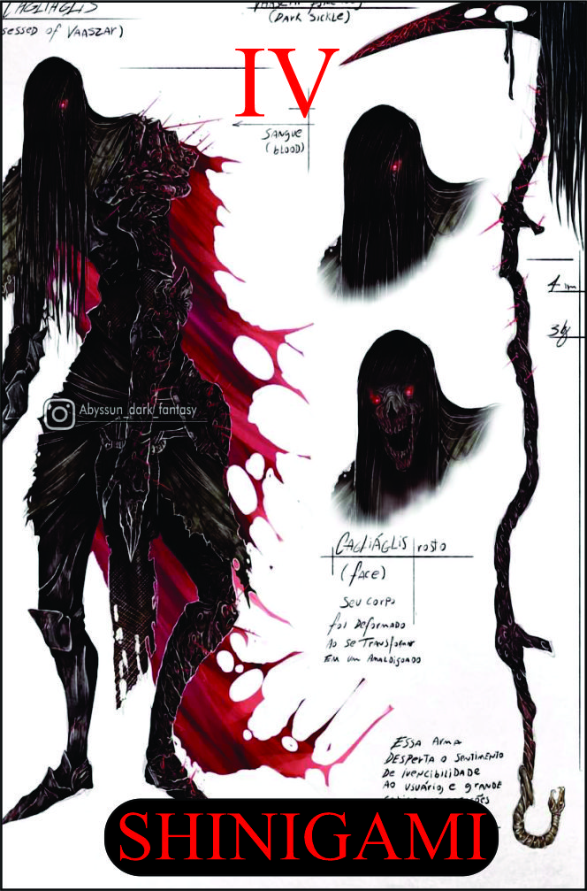

Shinigami
Têndencia: Neutro Mal
Passiva:
Herança do Shinigami:
Como um Shinigami, você herda a foice sagrada dos ceifeiros de almas. Essa passiva permite que você manifeste a foice do Shinigami, uma arma poderosa capaz de colher almas e canalizar energia espiritual. Dano: +5
Legado 1 - Golpe Celestial:
Você desfere um golpe poderoso com a foice do Shinigami, liberando uma onda de energia espiritual em direção ao seu alvo. Esse golpe causa dano elevado e possui chance de aplicar efeitos adicionais, como redução de resistência espiritual ou roubo de vida.
Pontealiza efeitos negativos
Condição:
Requer acúmulo de energia espiritual.
Legado 2 - Laço da Alma
Você estende a corrente da foice do Shinigami e envolve o alvo, criando um laço espiritual. Esse laço drena a energia vital do alvo, enfraquecendo-o ainda mais e fortalecendo você. Além disso, enquanto o laço estiver ativo, você pode controlar os movimentos do alvo, direcionando-o ou restringindo sua ação.
Bônus + 1 | Drena +3
Condição para ativar a habilidade:
Requer a presença de um alvo enfraquecido ou ferido.
Legado 3 - Ceifador Implacável:
Você convoca o poder máximo da foice do Shinigami, transformando-se em uma figura imponente e ameaçadora. Nesse estado, você ganha um aumento significativo de poder e velocidade, sendo capaz de aniquilar seus inimigos com ataques rápidos e devastadores. Enquanto estiver sob o efeito do Ceifador Implacável, você também tem a capacidade de atravessar barreiras espirituais e detectar a presença de almas.
Podendo atacar até 3 vezes | Sensorial +2
Condição para ativar a habilidade:
Requer a manifestação total da foice do Shinigami.
Legado 4 - Julgamento Final:
Quando você acumula um número suficiente de almas colhidas, você pode convocar o Julgamento Final. Nesse momento, você libera uma explosão de energia espiritual massiva que afeta todos os seres próximos. O Julgamento Final causa dano astronômico a todos os inimigos atingidos, além de aplicar efeitos negativos, como desorientação e redução de resistências. Aqueles que forem derrotados pelo Julgamento Final têm suas almas colhidas instantaneamente, fortalecendo você ainda mais.
Almas derrotadas porderá se acolhidas na foice | cada alma causa 10 de dano no total de 5 almas
Condição para ativar a habilidade:
Requer a coleta de almas suficientes.